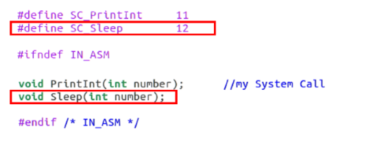
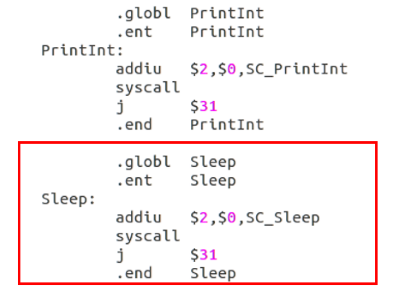
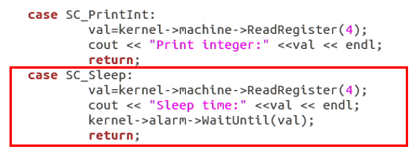
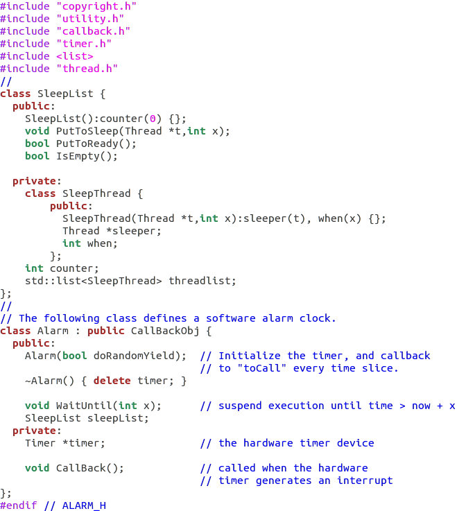
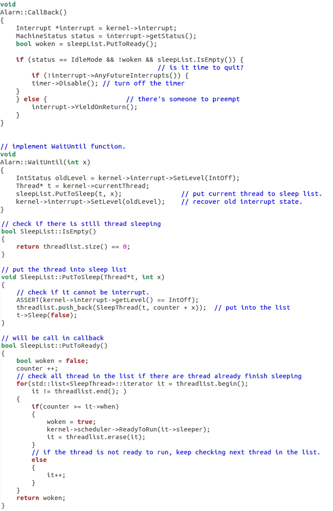
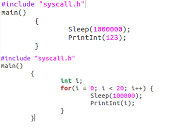
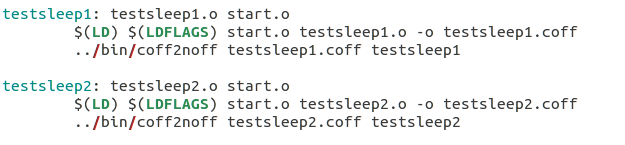
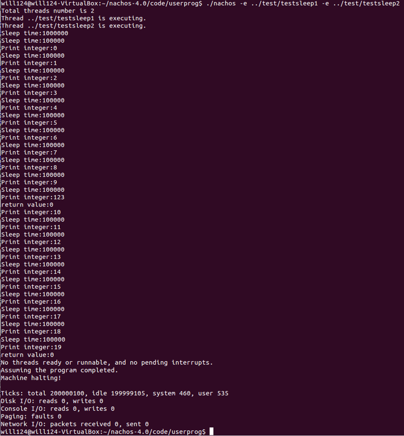

Motivation
在原先的Nachos中，僅有PrintInt()這個system call，而為了能讓thread能進入休眠，需要自己撰寫休眠的system call。
Implementation
(1) Define new system call code：在syscall.h中定義system call sleep，並且宣告void Sleep(int number)：
 Fig. 1. 在/code/userprog/syscall.h修改的程式碼
(2) Modify the start.s：
仿造PrintInt的程式碼，修改在/code/test/start.s的程式碼：
 Fig. 2. 在/code/test/start.s的新增程式碼
(3) Add new exception process：
仿造PrintInt的程式碼，增加新的exception來處理sleep：
 Fig. 3. 在/code/userprog/exception.cc的新增程式碼
(4) Modify the alarm.h：
當有程序呼叫Sleep()時，會呼叫WaitUntil()，然後將其丟入SleepList中休眠。SleepList中的counter為一計數器記錄休眠時間，然後在CallBlack()被呼叫時，會去檢查是否有休眠中的程序該被喚醒：
 Fig. 4. 在/code/threads/alarm.h的新增及修改的程式碼
(5) Define some methods：
最後在/code/threads/alarm.cc中定義一些功能，包括WaitUntil()、CallBack()等等，以及定義SleepList的功能：
 Fig. 5. 在/code/threads/alarm.cc的新增及修改的程式碼
(6) Write test code：
寫法與test1的程式碼類似，只是多了sleep的功能，而因為整個測試檔案要能在nachOS上執行，所以要把這些訊息寫入Makefile中：
 Fig. 6. testsleep1和testsleep2的測試程式  Fig. 7. Makefile中新增的程式碼
Result
Make後同時執行兩個sleep測試程式，結果執行成功且功能正常，先執行testsleep1，然後進入睡眠，執行testsleep2十次之後，testsleep1被喚醒，執行完print 123後回到testsleep2，繼續完成：
 Fig. 8. sleep測試結果